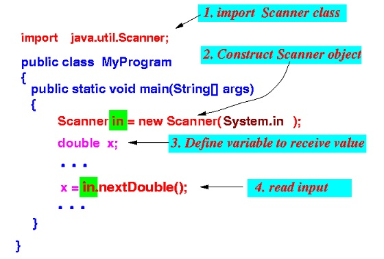
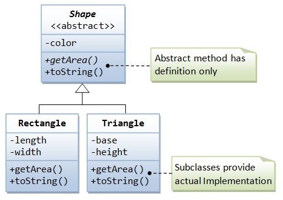

Introduction to Module
Brief introduction to the module, assessment approach and typical topics that will be covered.
JVM

We will look at the Java Virtual Machine (JVM) and the main method.
Introduction to Eclipse

Begin exploring the Eclipse Integrated Development Environment (IDE).
OO Recap

A recap of OO concepts.
Scanner IO

Introduction to the Scanner class for console input and output.
Array Recap
We will do a recap of primitive arrays.
Introduction to ArrayList

You will be introduced to a new way of grouping objects - the ArrayList.
Continuing with ArrayList
.jpg)
We will continue to look at a new way of grouping objects - ArrayList.
Menu Driven Systems

We will look at the switch statement and how we can use this in a menu driven app.
CRUD Process

We will introduce you to the Create, Read, Update and Delete (CRUD) Process.
Introduction to XML

We will introduce you to XML and two classes that allow us to save objects as XML and read them back in.
XML and Java

We will show you how to serialize objects from Java to an XML file and read them back into your Java program.
Exception Handling

We will show you, by using try and catch blocks, how to stop your program from crashing when invalid user input is entered.
Miscellaneous Concepts
We will cover some miscellaneous concepts such as static variables, static methods, javadoc and storing calculated data.
Problem-based Learning

We will introduce a different approach to learning, called Problem-based Learning (PBL).
Assignment 1

We will introduce the board game, North Sea Oil, that you will build for your assignment. - Due date: Sunday 18th March, 5pm sharp. - This assignment is worth 45% of your overall grade for this module.
Rules
This is the definitive set of Rules for the North Sea Oil Game.
PBL Resources

These are the resources for the PBL project i.e. Teams, Weekly Timesheet and Self/Peer Review Criteria.
Tech Support System V1
We will start developing a simple console-based tech support system that will always respond with the phrase "That sounds interesting. Tell me more...".
Tech Support System V2

We will continue developing the simple console-based tech support system. However, in this version, we will have more meaningful, randomised responses for the user.
Tech Support System V3

We will continue evolving the simple console-based tech support system. However, in this version, we will reply to the user with a context sensitive response, based on their input.
Inheritance

We will start investigating inheritance which is one of the key principles in Object Oriented programming.
Exploring Polymorphism
We will continue looking at inheritance and cover polymorphism, overriding and dynamic method lookup.
Abstraction

We will start implementing abstraction in our inheritance hierarchy for the Network system.
Debugging

Learn how to use Eclipse's debugger i.e. pause your program mid-execution, view the contents of your variables and execute each statement one at a time to see it's effect.
Debugging Resources

Source code for debugging examples.
Test Driven Development (TDD)

We will introduce the concept of TDD, Unit Testing and the JUnit Framework.
JUnit and DVD.java

We will demonstrate how to use the JUnit Framework to test DVD.java.
JUnit Terminology

Having tested DVD.java using the JUnit Framework, we will now cover the terminology used in this process (assertions, annotations and fixtures).
Planning Testing

Here we will cover the Four Phase Test and present a more complicated JUnit test.
Completing DVD app testing

Here we will review the DVDTest.java class and develop JUnit tests for more classes in the DVD app.
Assignment 2

The specification for Assignment 2 (worth 55% of your grade for this semester). More to follow.
Testing Resources

These are the resources for the Testing section (TDD) of the course.